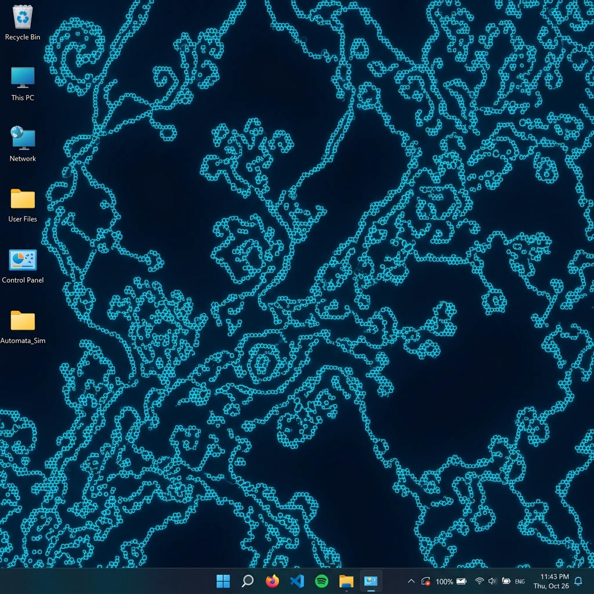

Cellular automata, alive on your desktop
A simulation engine designed for beauty, performance, and exploration.
Conway's Game of Life and multi-state Generations mode, with 17 handcrafted presets to explore.
Lab, Ember, Bio, and Mono — each with its own color palette, UI personality, and visual effects.
Runs behind your desktop icons as a native Windows wallpaper via WorkerW embedding. Truly living art.
Rust simulation core compiled to WebAssembly and rendered with WebGL. Smooth 60fps on million-cell grids.
Paint, erase, zoom, and pan with mouse, touch, or keyboard. Three brush shapes and adjustable sizes.
Snapshot your creation at full resolution. Every frame is a potential wallpaper or generative art piece.
Each theme transforms the entire experience — colors, UI shapes, visual effects, and mood.
Cyan diagnostics on midnight silicon
A clinical, high-contrast theme inspired by laboratory displays and diagnostic interfaces. Sharp corners and glowing cyan accents cut through deep navy darkness.
From Conway's classic Life to exotic multi-state systems. Each preset creates entirely different emergent behavior.

Forma embeds directly behind your desktop icons as a native Windows wallpaper. It auto-recovers when Explorer restarts, runs from the system tray, and remembers your settings.
From low-level simulation to pixel-perfect rendering.